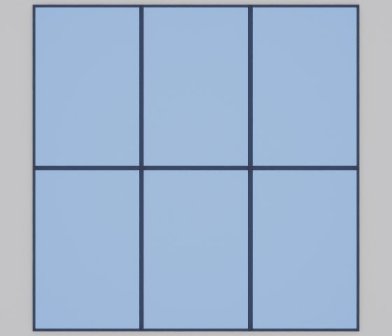
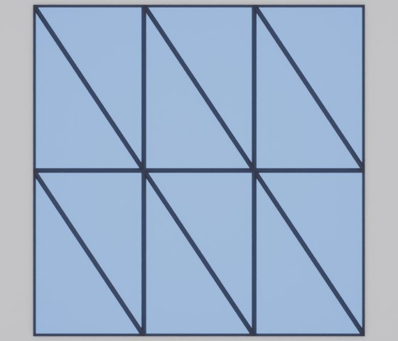
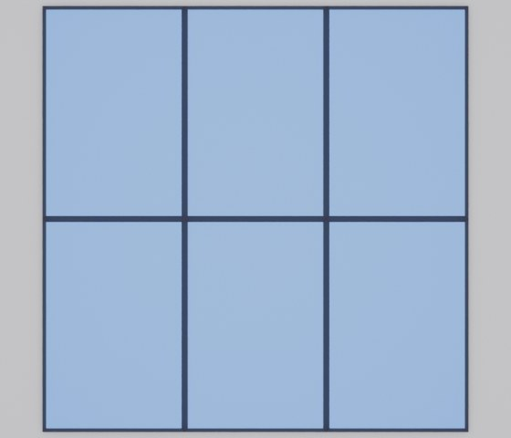

Bonus lesson
Triangulate and Triangles to Quads
Blender has a pair of opposite tools in the Face menu. Triangulate Faces (Ctrl+T) converts each selected face, whether a quad or an n-gon, into triangles. Triangles to Quads (Alt+J) does the reverse: it merges adjacent triangles by removing the edge they share, to form a quad.



Triangulate Faces
Select the faces you want, then choose Face › Triangulate Faces or press Ctrl+T. The manual also points to the Triangulate modifier for the same job without changing the mesh directly.
Triangles to Quads
Select triangles, then choose Face › Triangles to Quads or press Alt+J. You can select the whole mesh, or select pairs of triangles yourself to guide which ones are joined. At least two adjacent triangles are needed to make a quad. The tool aims for the most even rectangular quads, so with an odd count, or an awkward layout, some triangles may remain.
- Max Angle: the threshold for joining adjacent triangles, from 0 to 180 degrees. At 0 only triangles that form a perfect rectangle are joined.
- Topology Influence: prefers joins that match the existing quads around them.
- Compare UVs, Color Attributes, Sharp and Materials: stop triangles being joined when those details do not match.
- Deselect Joined: deselects the triangles that were merged, so you can see what is left.
For best results, the manual suggests Topology Influence between 100 and 130% and Max Angle at 180 degrees.
Read the manual pages on Triangulate Faces and Triangles to Quads.
Try it
This exercise is our own suggestion and has not been run step by step in the GUI. Add a plane, enter Edit Mode, and subdivide it once with right click › Subdivide. Select everything and press Ctrl+T, then press Alt+J and compare the result with where you started. Use Ctrl+Z to step back.